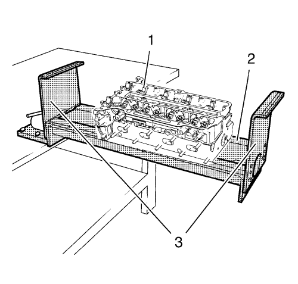
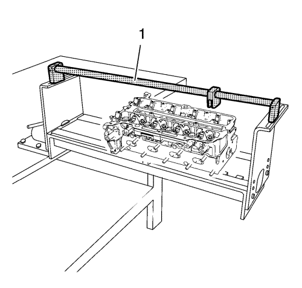
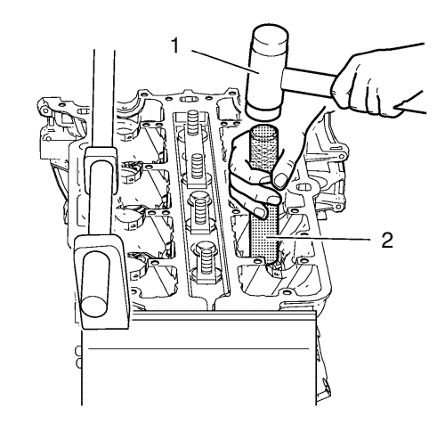
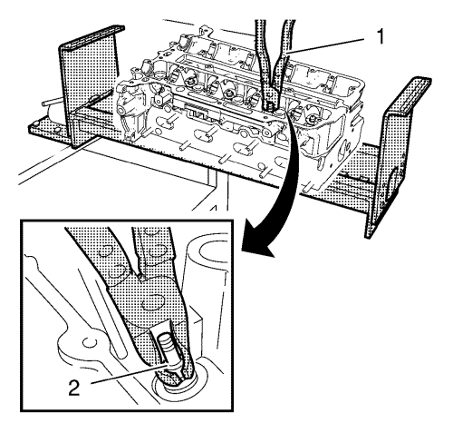
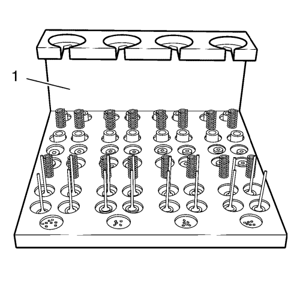

Desmontaje de la culata
Herramientas especiales
| • | EN-6215 Equipo de soporte |
| • | EN-6167 Juego de soporte |
| • | EN-6086 Juego sustitución de muelle y cuña |
| • | EN-6171 Herramienta de desbloqueo |
| • | EN-849 Bandeja de armado |
| • | EN-840 Tenazas/herramienta de desmontaje |
Si desea informarse sobre herramientas regionales equivalentes, consultar Herramientas especiales .

- Monte la culata (1) en la mesa de montaje EN-6215-1 (2) junto con el soporte EN-6215-5 (3). Sujete la culata con los pernos cortos adecuados.

- Instale el asidero EN-6215-4 (1) en la mesa de montaje EN-6215-1.
- Gire la culata 180°.
- Repase la rosca de las bujías.

- Monte los 4 refuerzos EN-6167-1 (1) y sujételos con los pernos EN-6167-5 (2) para sujetar las válvulas.

- Golpee los seguros de los muelles de válvula con un martillo blando. Utilice un mazo de goma (1) y la herramienta de desbloqueo EN-6171 (2).

- Monte el brazo de palanca EN-6086-7 (2) en el asidero (1).
- Monte la herramienta de desmontaje EN-6086-11 (4) junto con el adaptador EN-6086-1 (3) en la palanca.
Nota: La herramienta de desmontaje debe colocarse en paralelo a los seguros de muelle de válvula para prevenir daños en las herramientas o en los componentes del tren de válvulas.
- Presione los muelles de válvula y los seguros del muelle de válvula hasta que las chavetas de válvula dejen de verse afectadas por la carga del muelle. Extraiga las llaves de válvula.
Nota: Fíjese bien en la posición de montaje de los muelles de válvula, los seguros de los muelles y las chavetas de válvula.
- Desmonte los muelles de válvula y los seguros y colóquelos en la bandeja de armado EN-849 para asegurarse de que se montarán en su posición original.

- Desmonte los retenes de aceite del vástago de válvula (2). Utilice las tenazas EN-840 (1).
- Desmonte los tornillos EN-6167-5 y el anclaje EN-6167-1.

Nota: Fíjese bien en la posición de montaje de las válvulas.
- Desmonte las válvulas y colóquelos en la bandeja de armado EN-849 (1) para asegurarse de que se montarán en su posición original.
| © Copyright Chevrolet. All rights reserved |